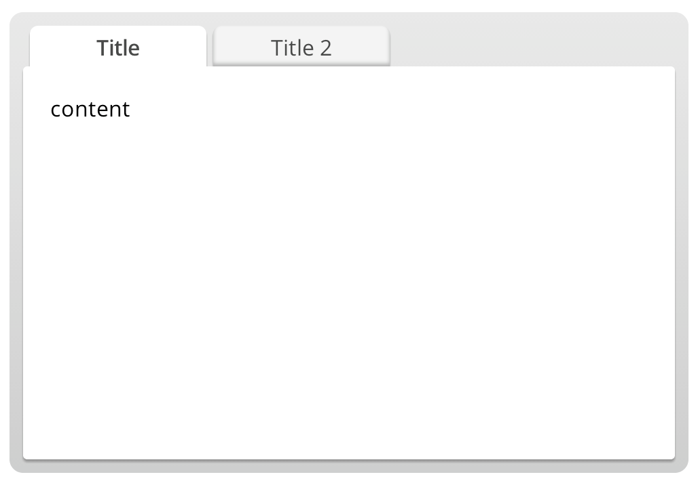
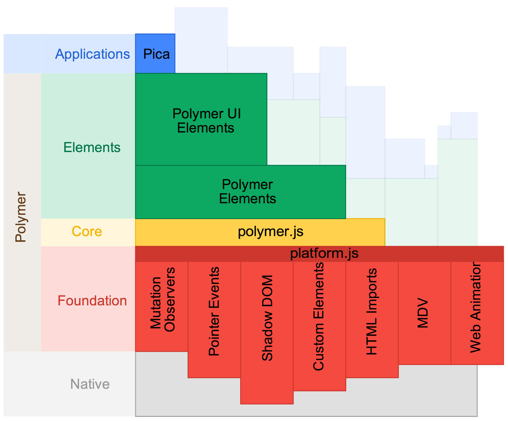

Who is this guy?
Eric Bidelman
Staff Developer Programs Engineer, 


"Using the HTML5 Filesystem API" - O'Reilly
I have 60 min to cover the entire future web platform :(
FAIL


Web Components?
Dead?
<gangnam-style></gangnam-style>
<photo-booth></photo-booth>
<button is="mega-button">Mega button</button>
Readable?


This is how we build web apps!
Markup can be meaningful again \m/
<hangout-module>
<hangout-chat from="Paul, Addy" profile="118075919496626375791">
<hangout-discussion>
<hangout-message from="Paul" profile="profile.png" datetime="2013-07-17T12:02">
<p>Feelin' this Web Components thing.</p>
<p>Heard of it?</p>
</hangout-message>
...
</hangout-discussion>
</hangout-chat>
<hangout-chat></hangout-chat>
</hangout-module>
Need better tools...
Building blocks of Web Components
- Shadow DOM - mortar/glue
- DOM & style encapsulation
- HTML Templates - scaffold/blueprint
- inert chunks of DOM. Activated for later use.
- Custom Elements - toolbelt
- create new HTML elements. Expand HTML's existing vocabulary
- extend existing DOM objects with new imperative APIs
- HTML Imports
- MDV - data binding
- only pieces are spec'd (
Object.observe(),<template>)
- only pieces are spec'd (
A collection of new API primitives in the browser
Custom Elements
Creating new elements in HTML
Methods
- Define an
<element>definition - In JavaScript with
document.register()
Element definition registers the new tag with the browser:
<element name="x-foo" constructor="XFoo"> ... </element>
Lifecycle callbacks
By defining special methods, gain insight to element's life:
createdCallbackenteredDocumentCallbackleftDocumentCallbackattributeChangedCallback(attrName, oldVal, newVal)
Basic element definition
<element name="x-foo" constructor="XFoo">
<section>I'm an x-foo!</section>
<script>
var section = this.querySelector('section');
this.register({
prototype: {
createdCallback: function() {
this.textContent = section.textContent; // this == <x-foo>
},
foo: function() { alert('foo() called'); }
}
});
</script>
</element>
Using a custom element
After registration, use it like any standard DOM element
Declare it
<x-foo></x-foo>
Create DOM in JS
var elem = document.createElement('x-foo');
elem.addEventListener('click', function(e) {
e.target.foo(); // alert 'foo() called'.
});
Use new (if the constructor attribute was defined)
document.body.appendChild(new XFoo());
Extending existing HTML elements
declarative version
In an <element> definition, use the extends attribute:
<element name="mega-button" extends="button"
constructor="MegaButton">
...
</element>
Extending existing HTML elements
imperative version
Rock the prototype you want to inherit from:
var MegaButtonProto = Object.create(HTMLButtonElement.prototype);
...
var MegaButton = document.register('mega-button', {prototype: MegaButtonProto});
An instance is called a type extension custom element
// <button is="mega-button">
var megaButton = document.createElement('button', 'mega-button');
// megaButton instanceof MegaButton === true
Registering elements in JS
going the imperative route
document.register()takes the tag name and descriptionprototype:
var XFooProto = Object.create(HTMLElement.prototype);
// Setup optional lifecycle callbacks: created, entered, left, attributeChanged.
XFooProto.createdCallback = function() {
this.textContent = "I'm an x-foo!";
};
// Define its properties/methods API.
XFooProto.foo = function() { alert('foo() called'); };
XFooProto.bar = 5;
var XFoo = document.register('x-foo', {prototype: XFooProto});
//var xFoo = new XFoo();
//var xFoo = document.createElement('x-foo');
Custom Elements
browser support

Building blocks of Web Components
 Custom Elements
Custom Elements
HTML Templates
Shadow DOM
HTML Imports
HTML Templates
Declaring a template
DOM-based templating
Chunks of inert markup for later use:
<template id="mytemplate"> <img src=""> <!-- can be dynamically populated at runtime --> <div class="comment"></div> </template>
- Working directly w/ DOM
- Parsed; not rendered
<script>not run, stylesheets/images not loaded, media not played
- Hidden from document. Cannot traverse into its DOM
- e.g.
document.querySelector('#mytemplate .comment') == null
- e.g.
Using template content
Two ways to access the guts:
template.content(a document fragment)template.innerHTML
Clone .content → stamp it out → goes "live"
Example
<template>
<span>Instance: <b>0</b></span>
<script>alert('kthxbai!')</script>
</template>
<button onlclick="useIt()">Stamp</button>
<script>
function useIt() {
var content = document.querySelector('template').content; // 1. Get guts.
var b = content.querySelector('b');
b.textContent = parseInt(b.textContent) + 1; // 2. Modify template's DOM at runtime.
document.body.appendChild(content.cloneNode(true)); // 3. Clone to stamp it out.
}
</script>
Instance: 0
Putting things together

Sprinkle in some <template>
Using <template> in an element
Wrapping markup in a <template> makes it inert until an instance is created:
<element name="x-foo">
<template>
<link rel="stylesheet" href="element.css">
<img src="profile.png">
<div class="comment"></div>
</template>
<script>...</script>
</element>
HTML Templates
browser support
Building blocks of Web Components
 Custom Elements
Custom Elements
 HTML Templates
HTML Templates
Shadow DOM
HTML Imports
DOM
Shadow DOM gives us markup encapsulation, style boundaries, and exposes (to web developers) the same mechanics browsers vendors have been using to implement their internal UI.
The web has encapsulation...
<iframe>
Bloated
There's more lurking in the shadows...
- Truth #1: Elements can "host" hidden DOM
- Truth #2: It can't be accessed from outside JS
<input type="date"> <input type="time">
- Other examples:
<video><textarea><details>
Shadow DOM hides implementation details
Using Shadow DOM
encapsulate the guts of an element
<my-element>...</my-element>
<script>
var shadow = document.querySelector('my-element').createShadowRoot();
shadow.innerHTML = '<h2>Shadow DOMing!</h2>' +
'<div>awesome content</div>';
</script>
<my-element>
#document-fragment
<h2>Shadow DOMing!</h2>
<div>awesome content</div>
</my-element>
Define an internal structure with insertion points
<element name="my-tabs">
<template>
<style>...</style>
<content select="h2"></content>
<content select="section"></content>
</template>
</element>
<my-tabs> <h2>Title</h2> <section>content</section> <h2>Title 2</h2> ... </my-tabs>

Demo: Meme Generator
<my-meme src="images/beaches.jpg"> <h1 contenteditable>Stay classy</h1> <h2 contenteditable>Web!</h2> </my-meme>
Style encapsulation for free
- Styles defined in Shadow DOM are scoped by default
- Page styles don't bleed across the shadow boundary (unless we let them)
var shadow = document.querySelector('my-element').createShadowRoot();
shadow.innerHTML = '<style>h2 { color: red; }</style>' +
'<h2>Shadow DOMing!</h2>' +
'<div>awesome content</div>';
// shadow.resetStyleInheritance = true; // click me
// shadow.applyAuthorStyles = true; // click me
My Title
My Subtitle
...other content...
Article on styling: www.polymer-project.org/articles/styling-elements.html
Self-styling elements
- Rules in an
@hostblock target your element. - Default styles or reacting to different states:
<style>
@host {
:scope { display: inline-block; transition: background 200ms ease-in-out; }
:scope:hover { color: white; background-color: black; }
:scope:active { top: 2px; left: 2px; position: relative; }
}
</style>
Putting it together

Sprinkle in some Shadow DOM
Using Shadow DOM in an element
encapsulate the details
Create Shadow DOM from <template> content:
<element name="x-foo-shadow">
<template>
<style>@host { :scope { background: #ffcc00; ... } }</style>
<section>I'm an x-foo-shadow. Gots me some Shadow DOM!</section>
</template>
<script>
var template = this.querySelector('template');
this.register({ prototype: {
createdCallback: function() {
this.createShadowRoot().appendChild(template.content.cloneNode(true));
}
}});
</script>
</element>
Shadow DOM
browser support
Building blocks of Web Components
 Custom Elements
Custom Elements
 HTML Templates
HTML Templates
 Shadow DOM
Shadow DOM
HTML Imports
HTML Imports
HTML Imports
Package. Distribute. Share. Reuse.
<!DOCTYPE html>
<html>
<head>
<link rel="import" href="x-foo.html">
</head>
<body>
<x-foo></x-foo> <!-- Element definition is in x-foo.html -->
</body>
</html>
Reusing other components
<link rel="import" href="x-toolbar.html">
<link rel="import" href="menu-item.html">
<element name="awesome-menu">
<template>
<x-toolbar responsive="true">
<menu-item src="images/do.png" selected>Do</menu-item>
<menu-item src="images/re.png">Re</menu-item>
<menu-item src="images/mi.png">Mi</menu-item>
<x-toolbar>
</template>
...
</element>
<link rel="import" href="awesome-menu.html"> <awesome-menu></awesome-menu>
HTML Imports
browser support
Building blocks of Web Components
 HTML Templates
HTML Templates
 Shadow DOM
Shadow DOM
 Custom Elements
Custom Elements
 HTML Imports
HTML Imports

 Polymer
Polymer
polymer-project.org
What is it?
- New type of library for the evolving web (~35KB)
- goal: support latest version of modern browsers
- Set of polyfill libraries
- Shadow DOM, Custom Elements, MDV, ...
- Sugaring layer
- expresses opinionated way use these new APIs together
- Comprehensive set of UI Components (in progress)
Architecture stack

Philosophy
- Love HTML/DOM!
- Custom Elements are its core
- everything is a custom element
- Evolve with the web platform
- Minimize boilerplate code
- remove tediousness of building web apps
- Be feedback loop to web platform standards
- Salt to taste - entire stack is designed to be a la carte
Leverages Web Components and gets better as the web platform evolves.
Polymer features
create super-charged custom elements
- Less boilerplate
- Simplified element registration
- Declarative data-binding using MDV
- Declarative event mappings
- Published attributes
- Change watchers
- Automatic node finding (
this.$.nameInput.value = 5)
Remember custom elements w/o Polymer...
<element name="my-input" constructor="MyInput">
<template>
...
</template>
<script>
var template = this.querySelector('template');
this.register({
prototype: {
created function() {
this.createShadowRoot().appendChild(
template.content.cloneNode(true));
}
}
});
</script>
</element>
Polymer element
Look ma, no script!
<polymer-element name="my-input" constructor="MyInput" noscript>
<template>
...
</template>
</polymer-element>
<script src="polymer.min.js"></script> <my-input></my-input>
More complex elements
Define properties/methods:
<polymer-element name="my-input" attributes="type">
<template>...</template>
<script>
Polymer('my-input', {
createdCallback: function() { ... },
type: 'mytype'
});
</script>
</polymer-element>
De-coupling script:
<polymer-element name="my-input"> <template>...</template> <script src="path/to/myinput-element.js"></script> <!-- Calls Polymer() --> </polymer-element>
Use the sugaring
<polymer-element name="my-input" attributes="color type">
<template>
<input type="{{type}}" style="color:{{color}}" on-click="onClick">
</template>
<script>
Polymer('my-input', {
type: 'text',
color: 'red',
colorChanged: function() { console.log('New color: ' + this.color); },
onClick: function(e) { alert(e); }
});
</script>
</polymer-element>
<my-input type="text"></my-input>

Try it today? Yes!
- Use Chrome Canary, turn on:
- Enable Experimental Web Platform features in
about:flags - Enable experimental JavaScript in
about:flags - Enable Show Shadow DOM in DevTools
- Watch Cr-Blink-WebComponents bug hotlist
- Try Polymer!